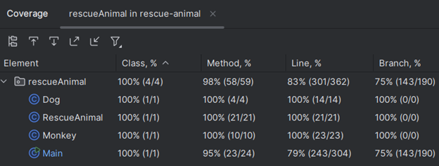

I'm a versatile software engineer who bridges technical implementation with creative vision. From designing and shipping production Android apps to building full-stack web platforms, creating interactive 3D graphics and media, and developing ML-powered recommendation systems — I have proven experience of delivering precise, dynamic solutions across the entire development lifecycle. Whether it's mobile, web, data science, or interactive media, I bring the same commitment to quality, user experience, and innovation to every project.
Flick (Android)
Designer/Engineer: Matthew Pool
Synopsis
Flick is a vertical video app similar in style to TikTok but with an added feature: a single sideways swipe reveals videos with significant similarity to the current video you are watching.
Visual and auditory feedback educates users on app functionality and navigation, ensuring an optimal experience on the first launch.
Users interact via fire (like) and poop (dislike) icons, with video ID, view duration, and preference data uploaded to Firestore.
The user can use basic gestures to increase playback speed or pause and unpause the video.
After an initial warmup period, the vertical feed operates on an intelligent cycle that prioritizes serving videos predicted to generate the highest engagement from that user.
The recommendation engine tokenizes Archive.org metadata and employs cosine similarity calculations weighted by view time and like/dislike ratios.
Random content is interspersed to facilitate content discovery beyond this algorithm.
The app prebuffers two upcoming videos by default, reducing to one when a qualified similar video exists at the current index and needs to be preloaded.
A history index tracks the last viewed video, enabling users to instantaneously recover from accidental swipes.
Optimized Convoluted Deep Neural Network (CDNN) model for image recognition, experimenting with hyperparameters to balance accuracy and training efficiency
Created and interacted with various databases and datatypes
Developed Python script using pandas, matplotlib, numpy, and ploty to analyze a NASA dataset of global temperature deviations and graph a curved trend line for the plotted points
Java, Spring Boot, OWASP ZAP, Cryptography (AES/SHA)
Vulnerability Assessment: Audited a RESTful API using OWASP Dependency-Check, identifying critical flaws such as hardcoded credentials in DocData.java and potential SQL injection points.
Remediation Engineering: Refactored the codebase to implement AES-256 encryption for data at rest and SHA-256 hashing for checksum verification.
Secure Configuration: Enforced HTTPS/TLS on port 8443 and upgraded legacy Spring Boot dependencies to patch known CVEs (e.g., CVE-2022-22965).
Compliance: Aligned software architecture with GDPR, SOX, and HIPAA standards by implementing proper access control and audit logging.
Summary of findings from the Manual & Static Analysis phases
Agile Project Management & Scrum Leadership
Scrum Master, Jira, SDLC, User Stories, Team Leadership
The Role: As Scrum Master for the SNHU Travel App, I led the development team through a transition from Waterfall to Agile
Strategic Pivot: Successfully managed a major scope change mid-development—shifting the product focus to "Detox and Wellness" and redesigning the GUI from a list view to a slideshow—without disrupting team velocity.
Process Optimization: Utilized Jira for backlog grooming and tracking. Implemented "Planning Poker" for estimation, resulting in more accurate velocity forecasting and reduced technical debt.
Team Coaching: Enforced the "Definition of Done" (DoD) and fostered a culture of transparency, effectively removing blockers identified during daily standups.
Custom Algorithm: Implemented a manual, recursive Merge Sort ($O(n \log n)$) to optimize sorting performance for large datasets, replacing a previous $O(n^2)$ Insertion Sort.
Data Structures: Architected a system using vector of custom Course structs to handle dynamic data loading from CSV files.
Memory Management: Managed object creation and vector resizing manually to ensure efficient memory usage during the file parsing phase.
Java, JUnit 5, Test-Driven Development (TDD), Maven
Overview: Developed a backend service module for scheduling system appointments, featuring strict data validation and in-memory data management.
Defensive Programming: Implemented robust validation logic to enforce business rules, such as rejecting appointments with past dates or null IDs .
Automated Testing: Engineered a comprehensive JUnit 5 test suite achieving high code coverage. Utilized @BeforeEach for test fixture setup and assertThrows to verify exception handling for invalid inputs.
Edge Case Handling: Specifically targeted boundary conditions—testing maximum ID lengths, empty descriptions, and "Y2K" past-date scenarios to ensure system stability.
100% Pass Rate: Verifying validation logic and exception handling
This school project required students to choose a piece of software that they wrote at the beginning of the computer science program and improve it.
I chose an old Java command-line program that I made in one of my first computer science class I had taken. I picked it because it looked like it could use a little help (to put it lightly).
This is a brief summary of the changes implemented in this poor, HOPELESS application.
None taken. No offense, "Past Me".
But wait! Is there yet a shimmer of hope remaining after all...
Project Details
This is a text-based program that keeps track of certain rescue animals.
The user can add new animals using their names and other attributes but only to temporary storage.
The user can also print out a list of dogs, monkeys, or all non-reserved animals.
I decided to implement input validation, error-checking, and JUnit testing, as well as JavaDocs and other basic refactoring.
I created a more user-friendly interface by customizing the text colors and styles and adding ANSI escape codes to make headers so that the program is more visually appealing with clearer separation of the displayed elements.
I've improved both the overall user experience and the robustness of the program.
Added JavaDocs
Added Error-Handling and Input Validation:
Converted to Maven Framework:
Implemented JUnit Testing:

Added Custom Text Colors and Styles:
Database Enhancements
I knew this program could really benefit from database implementation. This would allow saving records to persistent storage, instead of temporary memory that is lost when program execution terminates. To start, I created a database for dogs and a database for monkeys using hash maps with MapDB. I used the animal name as the key and the animal instance as the value. Any time the user adds an animal, the animal is added to both temporary memory and persistent storage.
At initial program execution, the records in permanent storage are loaded into the in-program data structures to ensure fast access and efficiency. Now, the animal data persists across program executions, and the program finally provides the user with real-world functionality. Hooray!
Added Persistent Storage:
Algorithmic Efficiency Enhancements
In terms of algorithmic efficiency and optimization, this program could use some minor tweaking. I ended up converting my main lists (dogList and monkeyList) from an ArrayList data type to a LinkedHashMap type. A LinkedHashMap uses key-value pairs and a doubly-linked list, which brings the worst-case time complexity down from O(n) to O(log n), where n is the number of animals in the list or map. In my new maps, I used the animal names as the keys and the associated animal instances as the values. I ended up using the entrySet method on the hash maps (dogMap and monkeyMap) to iterate through the values of each.
I also took advantage of the forEach method with a lambda expression to easily print out various instance values.
Optimized from O(n) down to O(log n) worst-case time complexity: